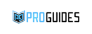
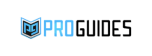
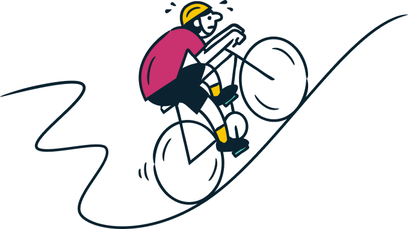

In-context user research that's fast and reliable.
Ensure user research happens early and often with Sprig's targeted microsurveys, video questions, and more.

Trusted by the world's most innovative companies


 



Modern product teams move fast, but learning from customers takes a ton of time, effort, and energy.
So teams often rush user research or skip it altogether, causing products and features to miss the mark.